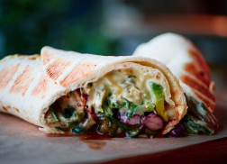
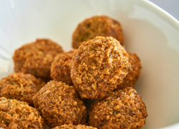
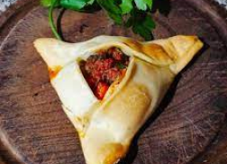
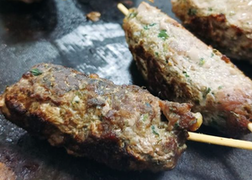
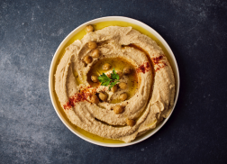
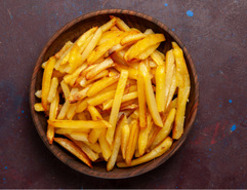

Menú

Shawarma
Wrap de carne cortada en finas rebanas junto con vegetales

Falafel
Croquetas a base de garbanzo

Fatay
Empanada de carne rellena con carne y vegetales salteados

Shish Kebab
Brochette de carne acompañado con nuestra salsa o hummus

Hummus
Pasta de garbanzos

Papas Fritas
Cono o porción de papas fritas